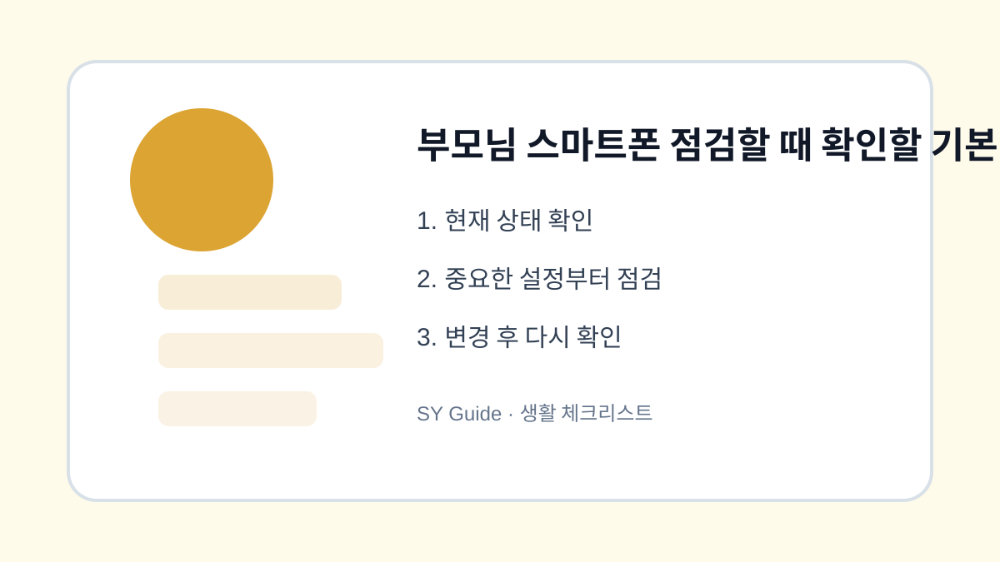

부모님 스마트폰 점검할 때 확인할 기본 항목
부모님 스마트폰을 대신 봐드릴 때 글씨 크기, 저장공간, 알림, 보안, 백업을 부담 없이 확인하는 체크리스트입니다.

부모님 스마트폰을 봐드릴 때는 최신 기능보다 불편한 부분을 먼저 해결하는 것이 좋습니다. 글씨가 작아서 보기 어렵거나, 알림이 너무 많이 와서 중요한 문자를 놓치거나, 저장공간 부족 때문에 사진 촬영이 안 되는 문제가 자주 생깁니다. 한 번에 모두 바꾸기보다 기본 항목을 정해 차근차근 확인하면 부담이 적습니다.
보기 편한 화면부터 맞추기
글씨 크기, 화면 확대, 밝기, 자동 잠금 시간을 먼저 확인합니다. 글씨가 너무 작으면 금융 앱이나 본인인증 화면에서 실수가 생길 수 있습니다. 반대로 화면 확대를 지나치게 키우면 버튼이 잘려 보일 수 있으므로 실제로 자주 쓰는 앱을 열어 확인하는 것이 좋습니다.
알림과 저장공간 정리하기
광고 알림이 많으면 중요한 문자나 가족 연락을 놓치기 쉽습니다. 쇼핑앱, 뉴스앱, 게임앱 알림을 줄이고 가족 연락 앱은 유지합니다. 저장공간은 사진과 동영상, 카카오톡 파일, 다운로드 폴더를 중심으로 확인하되 삭제 전에는 꼭 백업 여부를 함께 봐야 합니다.
보안 설정은 설명하면서 바꾸기
비밀번호, 지문, 얼굴 인식, 2단계 인증은 본인이 이해하지 못한 상태로 바꾸면 나중에 더 불편해질 수 있습니다. 왜 필요한지 설명하고, 복구 전화번호나 이메일이 최신인지 확인합니다. 금융 앱이나 인증서 앱은 함부로 삭제하지 말고 앱 이름과 용도를 함께 정리해두세요.
| 점검 항목 | 확인 내용 | 우선순위 |
|---|---|---|
| 화면 | 글씨 크기, 밝기 | 높음 |
| 알림 | 광고성 앱 알림 | 높음 |
| 저장공간 | 사진, 메신저 파일 | 중간 |
| 보안 | 잠금, 복구 정보 | 높음 |
| 백업 | 사진과 연락처 | 높음 |
상황별로 놓치기 쉬운 마지막 점검
- 글씨 크기와 화면 확대를 실제 앱에서 확인하기
- 광고 알림은 줄이고 가족 연락 알림은 유지하기
- 사진 삭제 전 백업 완료 여부 확인하기
- 비밀번호와 복구 정보를 본인에게 설명하기
- 자주 쓰는 앱 위치를 홈 화면에 정리하기
부모님 스마트폰 점검은 대신 고쳐주는 일보다 스스로 사용할 수 있게 만드는 일이 더 중요합니다. 변경한 설정은 종이에 간단히 적어두거나 가족 단톡방에 남겨두면 다음에 다시 확인하기 쉽습니다.
부모님 스마트폰을 점검할 실제 상황
부모님 휴대폰은 글자 크기, 소리, 저장공간, 보안 알림이 불편해도 그대로 쓰는 경우가 많습니다. 함께 사용할 때 자주 막히는 화면을 물어보고 필요한 설정만 바꾸면 만족도가 높습니다.
부모님 휴대폰 설정에서 주의할 점
익숙한 앱 위치나 알림 방식을 갑자기 바꾸면 오히려 사용이 어려워질 수 있습니다. 변경 전 화면을 보여드리고, 자주 쓰는 연락처와 긴급 연락 방법은 직접 눌러보며 확인하는 것이 좋습니다.
부모님 스마트폰 점검 관련 설정을 먼저 확인해야 하는 이유
부모님 스마트폰 점검 관련 설정은 단순히 메뉴 하나를 켜고 끄는 문제가 아니라, 실제 사용 흐름에서 어떤 불편을 줄이려는지 먼저 정해야 합니다. 같은 메뉴라도 기기 제조사, 운영체제 버전, 앱 업데이트 상태에 따라 이름이 달라질 수 있으므로 현재 화면을 기준으로 차근차근 확인하는 것이 좋습니다.
부모님 스마트폰 점검에서 자주 생기는 실수
부모님 스마트폰을 점검할을 정리할 때는 되돌리기 어려운 삭제나 계정 변경을 마지막 단계로 미루는 것이 좋습니다. 먼저 표시, 알림, 권한처럼 쉽게 복구할 수 있는 항목부터 확인하면 실수 부담을 줄일 수 있습니다.
부모님 스마트폰 점검 점검 후 다시 볼 부분
부모님 스마트폰을 점검할은 사용자마다 필요한 범위가 다르기 때문에, 자주 쓰는 앱과 계정부터 적용하는 편이 좋습니다. 바꾸기 전 화면과 바꾼 뒤 결과를 비교하면 어떤 설정이 실제로 도움이 됐는지 판단하기 쉽습니다.